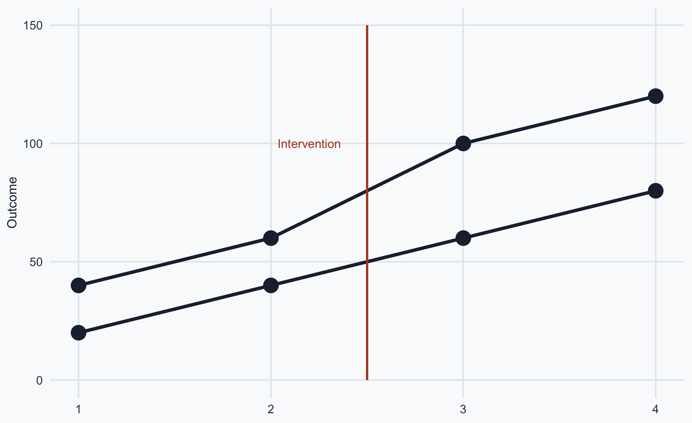
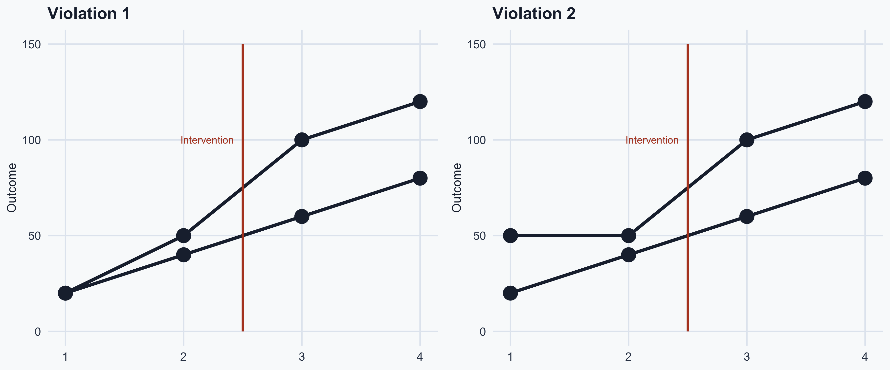
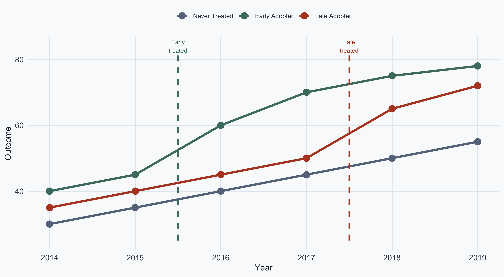
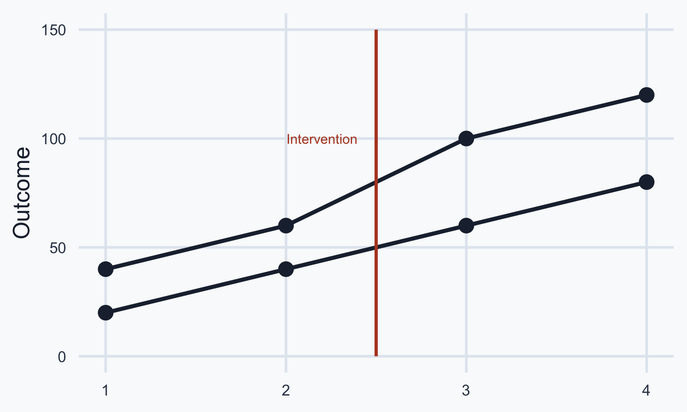

Statistical Analysis
Lecture 15: Revision for Final
![]()
Learning Outcomes and Skills
Learning Outcomes (Reminder)
- Use statistical terminology accurately and interpret descriptive statistics, hypothesis tests, and regressions
- Organize, clean, and merge datasets using R, and summarize data with numerical and graphical methods
- Conduct hypothesis tests (z-tests, t-tests) and estimate bivariate and multivariate regression models
- Distinguish correlation from causation using causal diagrams (DAGs) and apply causal inference methods (RCTs, matching, differences-in-differences)
- Create effective data visualizations using ggplot2 and produce reproducible reports in Quarto
Skills Acquired
- Interpret regression coefficients, standard errors, and goodness-of-fit statistics
- Assess covariate balance and analyze treatment effects in RCTs
- Identify and address threats to validity in observational studies and experiments
- Knowledge of differences-in-differences analysis
- Familiarity with R for data analysis and visualization: boxplots, choropleth maps, and coefficient plots
Jobs
Types of jobs where these skills are valuable:
- Data Analyst / Statistician
- Policy Analyst
- Market Research Analyst
- Program Evaluator / Impact Analyst
- Academic Researcher
Week 9: Bivariate Regression
Regression
\[\hat{Y}_i = b X_i + a\]
The slope \(b\) can be calculated using:
\[b = \rho \frac{\sigma_y}{\sigma_x}\]
where:
- \(\rho\) — the correlation between \(x\) and \(y\)
- \(\sigma_y\) — standard deviation of \(y\)
- \(\sigma_x\) — standard deviation of \(x\)
R-Squared
\(R^2\) tells us the variance explained in our outcome variable by our predictor variable(s).
\(R^2\) ranges from 0 to 1: \(R^2 \in [0, 1]\)
- \(R^2 = 0\) means no variance is explained
- \(R^2 = 1\) means all variance is explained
We typically convert to a percentage by multiplying by 100.
Interpretation: “Our model explains X% of the variance in our outcome variable.”
For example, \(R^2 = 0.6527\) means the model explains 65.27% of the variance.
Regression on a Binary Explanatory Variable

Interpretation
Coefficient Interpretation
On average, EU countries live 5.82 years longer compared to non-EU countries.
Magnitude
- People in EU countries live on average \(61.28 + 5.82\) years
- People outside of the EU live on average 61.29 years
Residuals & Standard Errors
Residual: the difference between observed and predicted values:
\[e_i = Y_i - \hat{Y}_i\]
Standard Error of the slope:
\[SE(b) = \sqrt{\frac{1}{n-2} \cdot \frac{\sum e_i^2}{\sum(X_i - \bar{X})^2}}\]
- Smaller SE → more precise estimate
- Used to compute t-values and p-values
OLS Assumptions
For \(\hat{\beta}_1\) to be unbiased, we need:
- Linearity — \(Y\) is a linear function of \(X\)
- Random Sampling — observations are independently drawn
- Zero Conditional Mean — \(E(\varepsilon | X) = 0\) (unobserved factors are uncorrelated with \(X\))
Omitted Variable Bias — the most common violation: when a variable affects both \(X\) and \(Y\) but is left out of the model, \(\hat{\beta}_1\) is biased.
Week 10: Bivariate and Multivariate Regression
Multivariate Regression: Interactions
| OLS4 | |
|---|---|
| (Intercept) | 48.979*** |
| (1.040) | |
| EU | 33.097*** |
| (6.595) | |
| Urbanization | 0.233*** |
| (0.019) | |
| EU \(\times\) Urbanization | -0.456*** |
| (0.097) | |
| Num.Obs. | 215 |
| \(R^2\) | 0.464 |
+ p < 0.1, * p < 0.05, ** p < 0.01, *** p < 0.001
Interpreting Interactions
- People in the EU live on average 33.097 years longer than people outside of the EU, holding everything else constant
- Every unit increase in urbanization is associated with an increase in life expectancy of 0.233, holding everything else constant
- Being in the EU and urbanization together have a statistically significant negative effect on life expectancy
Summary Statistics & Correlation Matrix
Summary statistics reveal central tendency (mean, median), variability (SD), and outliers (min, max).
| life_expectancy | urbanization | gdp | log_gdp | |
|---|---|---|---|---|
| life_expectancy | 1 | . | . | . |
| urbanization | .66 | 1 | . | . |
| gdp | .55 | .62 | 1 | . |
| log_gdp | .77 | .77 | .84 | 1 |
A correlation table tells us about the strength and direction of the linear relationship between two variables.
Log-Linear Interpretation
When the independent variable is log-transformed:
\[Y = \beta_0 + \beta_1 \log(X)\]
A 1% increase in \(X\) is associated with a \(\beta_1 / 100\) unit change in \(Y\).
Example: If \(\beta_1 = 7.5\) for log(GDP) predicting life expectancy, then a 1% increase in GDP is associated with a \(7.5 / 100 = 0.075\) year increase in life expectancy.
Gauss-Markov Assumptions
For OLS to be the Best Linear Unbiased Estimator (BLUE):
- Linearity — \(Y\) is a linear function of \(X\)
- Exogeneity — \(E(\varepsilon | X) = 0\)
- Homoskedasticity — \(\text{Var}(\varepsilon | X) = \sigma^2\) (constant variance)
- No Perfect Collinearity — no exact linear relationships among predictors
- Violations of 1–2 → biased coefficients
- Violations of 3–4 → unreliable standard errors (use robust SEs)
Scaling & Model Fit
Scaling: \(z_i = \frac{x_i - \bar{x}}{\sigma_x}\) — puts variables on a common scale (standard deviations)
\(R^2\) vs. Adjusted \(R^2\)
- In bivariate regression: use either \(R^2\) or Adjusted \(R^2\)
- In multivariate regression: use Adjusted \(R^2\)
- \(R^2\) never decreases when adding variables; Adjusted \(R^2\) penalizes redundant variables
Week 11: Theories of Change
Public Policy Programs
A public policy program should contain the following elements:
- Inputs — everything that goes into an activity: time, money, people
- Activities — actions that convert inputs into outputs: what the program does
- Outputs — tangible goods and services produced by those activities
- Outcomes — what happens after the population uses the outputs
\[\text{Inputs} \rightarrow \text{Activities} \rightarrow \text{Outputs} \rightarrow \text{Outcomes}\]
Confounding
Three types of associations: Confounding (problematic), Collision (problematic), Mediation (helpful)
- X causes Y
- Z causes both X and Y
- Z confounds the relationship between X and Y
- Thus, the relationship between X and Y is not identified
- Solution: include Z in the regression
Collision
Collision — a distortion that modifies an association between X and Y, caused by attempts to control for a common effect of X and Y.
- Z is called a collider
- X causes Z
- Y also causes Z
- These two relationships can cause the appearance of causal effects
Mediation
Mediation — a hypothesized causal chain in which X affects Z, which in turn affects Y.
- Z is called a mediator
- The paths from X to Z and from Z to Y are called direct effects
- The path from X to Y through Z is called the indirect effect
The Fundamental Problem of Causal Inference
The challenge in causal inference is that we do not observe both potential outcomes — we only observe one.
For example, one patient gets or does not get a pill.
We don’t get to observe the outcome for both taking and not taking the pill for the same patient.
Randomization & RCTs
Random assignment of treatment implies that selection bias is 0.
Randomization ensures that the ATE and ATT are the same and equal to the observed difference in means.
RCTs are usually considered the best approach to studying causal effects. However:
- Internal validity — a study’s findings for the sample are credible
- External validity — findings can be credibly extrapolated to the population
A study can have strong internal validity but weak external validity (and vice versa).
Week 12: Threats to Validity
Type I & Type II Errors
- Type I Error (false positive) — finding an effect that doesn’t exist; rejecting a true \(H_0\)
- Type II Error (false negative) — missing an effect that does exist; failing to reject a false \(H_0\)
Statistical power is the probability of detecting a true effect (i.e., avoiding a Type II error).
- Low power occurs when the sample size is too small
- Low power reduces the likelihood that a significant result reflects a true effect
Threats to Internal Validity
- History — events during the study unrelated to the treatment can affect the outcome
- Maturation — participants may change over time, even without an intervention
- Selection Bias — selected participants may differ from those not selected
- Attrition — occurs when a randomly assigned participant drops out of the analysis
- Regression to the Mean — extreme values tend to become less extreme over time
- Hawthorne Effect — participants change behavior because they know they are being observed
- Placebo Effect — participants improve even when receiving no active treatment
- Spillover Effects — the treatment has unintended impact on the control group
Threats to External Validity
- Sample Selection — the sample is not reflective of the actual population
- Contextual Factors — the setting influences results and limits generalizability
- Time-Related Factors — the context of a study can change over time
- Social Desirability Bias — people’s answers reflect societal pressures
Types of Research
Experimental studies are more likely to establish cause-and-effect relationships:
- They deal with selection problems: treatment and control groups are comparable
- They don’t fix attrition, construct, and statistical conclusion validity
- They tend to have external validity problems
Observational studies can provide valuable real-world insights but are more prone to bias and confounding.
Week 13: Differences in Differences
The DiD Estimator
\[\text{DiD} = (\bar{Y}_{T,\text{after}} - \bar{Y}_{T,\text{before}}) - (\bar{Y}_{C,\text{after}} - \bar{Y}_{C,\text{before}})\]
As a regression:
\[Y_{it} = \beta_0 + \beta_1 \text{Group}_i + \beta_2 \text{Time}_t + \beta_3 (\text{Group}_i \times \text{Time}_t) + \varepsilon_{it}\]
- \(\beta_3\) is the DiD estimate — the causal effect of the treatment
Card & Krueger (1993)
Does raising the minimum wage reduce employment?
- New Jersey raised its minimum wage ($4.25 → $5.05); Pennsylvania did not
| Before | After | Change | |
|---|---|---|---|
| NJ (treatment) | 20.44 | 21.03 | +0.59 |
| PA (control) | 23.33 | 21.17 | −2.16 |
\[\text{DiD} = 0.59 - (-2.16) = \mathbf{2.75}\]
Raising the minimum wage increased employment — contrary to textbook predictions.
DiD Assumptions
Parallel Trends Assumption
The treatment and control groups have the same trends prior to the intervention.
We assume the treatment group would have changed like the control group in the absence of the treatment.
Timing
Sometimes, units receive treatment at different times, which can distort our estimates.
Example: Parallel Trends Hold

Pre-treatment trends are parallel — DiD is valid
Example: Parallel Trends Violations

Pre-treatment trends diverge — DiD is not valid
Treatment Timing: Staggered Adoption

Already-treated “Early Adopters” used as controls for “Late Adopters” — biased estimates
Exam Logistics
Grading Breakdown
The exam in relation to grading:
- Five problem sets: 35% of the final grade (7% each)
- Mid-term: 30%
- Final exam: 30%
Problem Sets (Reminder)
Average of:
- Initial Submission
- Second Submission (if necessary)
Peer-grading: evaluating your colleague’s participation (5%)
Exam Format
- Duration: 1 hour and 15 minutes
- 20 short questions — you must answer all
- You can get partial credit if you attempt to answer
- No calculators or books allowed
Course Feedback and Evaluation
Course Feedback
What are some aspects of the course that you liked?
What are areas for improvement?
Let’s do the course evaluations.
Exam Example Questions
Example Questions (1)
1. You have the following regression model:
\[\text{Final\_grade} = 51 + 2 \times X_i\]
where 51 is the constant, 2 is \(b\), and \(X_i\) is the number of hours studied. What is the predicted final grade for a student who studies 21 hours?
2. You have a model predicting regime turnover using natural oil reserves. Every ton increase in oil reserves is associated with a 35% higher chance of democratization. \(R^2 = 0.62\). How do you interpret the \(R^2\)?
Example Questions (2)
4. Interpret the coefficient for math score and for female

5. What can you say about the statistical significance of the two variables? Why?
Example Questions (3)
6. Look at the following regression predicting income (thousands of dollars per month). Male is a binary variable. Interpret it.

Example Questions (4)
8. Interpret the following coefficients
You are trying to explain health scores (0 to 10) using age (years) and weight (kilos) as independent variables.

Example Questions (5)
9. What is statistical power?
10. What is maturation and why is it a threat to internal validity?
11. What is attrition and why is it a threat to internal validity?
Example Questions (6)
12. How can sample selection affect external validity?
13. Examine the following graph. Do you see a violation of the parallel trends assumption? Answer Yes or No.

Example Answers
Answers (1)
1. \(\text{Final\_grade} = 51 + 2 \times 21 = 51 + 42 = 93\)
2. Oil reserves explain 62 percent of the variation in democratization.
Answers (2)
4. Interpret the coefficients:
- For every point increase in math score, science score increases by 0.389, holding everything else constant
- Women have on average lower science scores by 2.010 compared to men, holding everything else constant
5. Only math is statistically significant at 5% because \(p < 0.05\). The female variable is significant at the 0.051 level.
Answers (3)
6.
Men make 249 dollars per month more than women, holding other factors constant.
7. Men make \(1{,}583 + 249 = 1{,}832\) dollars a month. Women make \(1{,}583\) dollars a month.
Answers (4)
8.
- Every year increase in age is associated with a decline in health of 0.019, holding everything else constant
- Every kilo is associated with more health, but this effect is not statistically significant
- Age and weight together have a statistically negative impact on health outcomes
Answers (5)
9. Statistical power is the probability of a hypothesis test finding an effect if there is an effect to be found.
10. Maturation — participants may change over time, even in the absence of an intervention.
11. Attrition — occurs when a randomly assigned participant drops out. E.g., participants who drop out are those not responding well to therapy.
Answers (6)
12. Sample selection is the process of selecting a sample that is not reflective of the actual population. The experimental sample may not be representative.
13. No.

Popescu (JCU) Statistical Analysis Lecture 15: Revision for Final